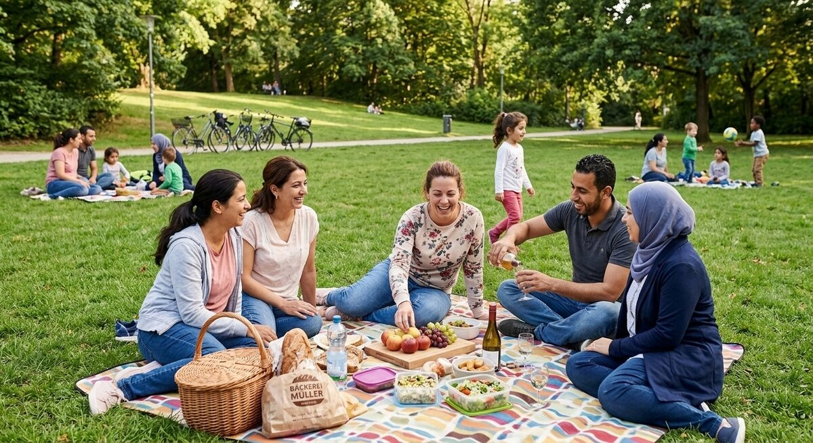

Teil 2 · Bild und Erfahrung
Karte 027
Ein Picknick im Park
Ausführliches Übungsmaterial zur Vorder- und Rückseite der Karte.

Ihre Aufgabe
- was Sie auf dem Bild sehen
- wie die Stimmung ist
- was die Personen mitgebracht haben könnten
- warum Menschen gern im Park Zeit verbringen
- ob Sie selbst Picknicks mögen
Interaktives Sprechtraining
Mit ChatGPT sprechen üben
Kopiere zuerst die Übungsanweisung. Öffne anschließend die ChatGPT-App oder ChatGPT im Browser, starte den Sprachmodus (Voice Mode) und füge den Prompt in diesen Chat ein.
- Tippe auf „Prompt kopieren“.
- Öffne anschließend die ChatGPT-App oder nutze den Browser-Link.
- Melde dich bei Bedarf an und starte in ChatGPT zuerst den Sprachmodus (Voice Mode).
- Füge den bereits kopierten Prompt in den Chat des Sprachmodus (Voice Mode) ein und sende ihn ab.
- Beginne anschließend die Sprechübung.
- Wenn du die Übung beenden und Feedback bekommen möchtest, sage:
Die Übung ist beendet. Bitte gib mir jetzt Feedback.
Prompt anzeigen oder manuell kopieren
ChatGPT ist ein externer Dienst. Für den Sprachmodus (Voice Mode) musst du dich möglicherweise bei deinem ChatGPT-Konto anmelden und den Zugriff auf das Mikrofon erlauben. Verfügbare Funktionen hängen von deinem Gerät und Konto ab. Die Übung ersetzt keine offizielle Prüfungsbewertung.
Nützliche Satzanfänge
- Im Park sieht man …
- Die Stimmung wirkt …
- Sie haben wahrscheinlich … mitgebracht.
- Viele Menschen gehen in den Park, weil …
- Ich selbst finde Picknicks …
Modellantwort anhören
Höre zuerst aufmerksam zu. Sprich danach nicht einfach alles nach, sondern bearbeite die Aufgabe mit eigenen Informationen.
Modellantwort
Im Park sieht man wahrscheinlich eine kleine Gruppe von Menschen auf einer Decke. Vielleicht essen sie Obst, Brot oder kleine Snacks und trinken etwas. Es ist vermutlich warm, denn alle wirken entspannt. Die Stimmung ist freundlich und locker. Ich denke, dass die Menschen dort Zeit miteinander verbringen und einfach den Tag genießen möchten.
Viele Menschen gehen gern in den Park, weil es dort ruhiger ist als in der Stadt und weil man nicht viel Geld ausgeben muss. Ein Picknick ist einfach zu organisieren, wenn das Wetter gut ist. Ich selbst mag solche Treffen, besonders im Frühling oder Sommer. Man kann reden, essen und sich bewegen. Wenn Kinder dabei sind, ist ein Park noch praktischer. Natürlich braucht man auch einen Plan B, falls es regnet. Trotzdem finde ich Picknicks schön, weil sie unkompliziert sind und eine gute Stimmung schaffen.
Mögliche Prüferfragen und Antwortideen
-
Gehen Sie gern in den Park?
Antwortidee: Ja, besonders am Wochenende gehe ich gern in den Park.
-
Was nehmen Sie für ein Picknick mit?
Antwortidee: Zum Beispiel Wasser, Obst, Brot und etwas Süßes.
-
Ist ein Picknick günstig?
Antwortidee: Ja, meistens ist es günstiger als ein Restaurantbesuch.
-
Was machen Sie bei schlechtem Wetter?
Antwortidee: Dann treffe ich mich lieber drinnen, zum Beispiel zu Hause oder im Café.
Wortschatz
| Deutsch | Englisch |
|---|---|
| das Picknick | picnic |
| die Decke | blanket |
| der Snack | snack |
| entspannt | relaxed |
| unkompliziert | uncomplicated |
| genießen | to enjoy |
| mitbringen | to bring along |
| der Frühling | spring |
Schnelltraining
Beschreiben Sie das Picknick in drei Sätzen. Danach sagen Sie, was Sie persönlich mitbringen würden.